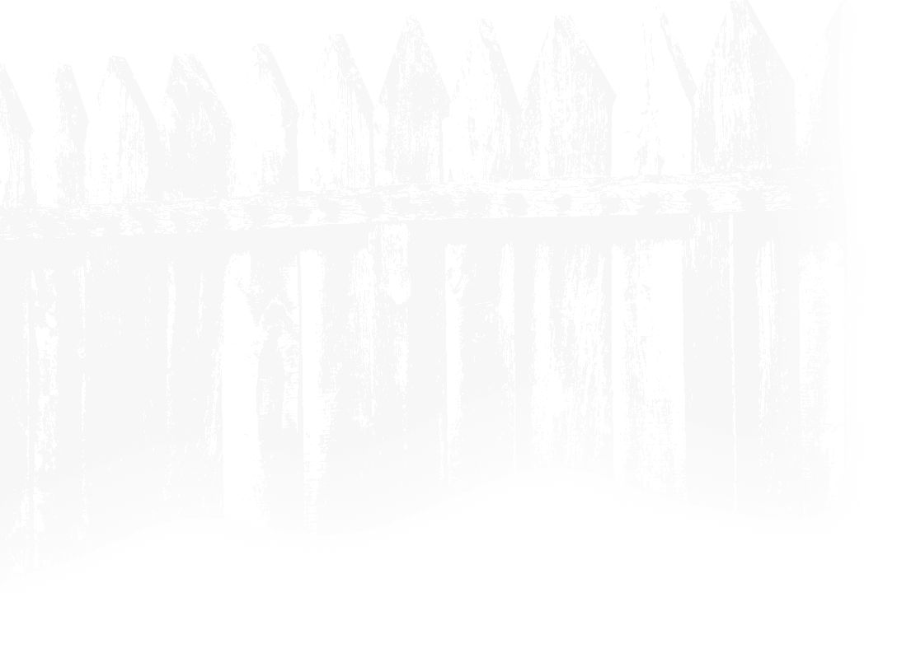
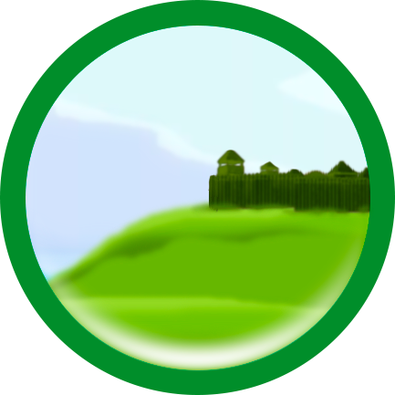

Идна - старший сын Донды батыра. Унаследовал от отца Солдырское городище, основал город-крепость Иднакар.
×
Солдырское городище (Иднакар) (удм. «городище [богатыря] Идны»)—археологический памятник федерального значения, средневековое городище IX-XIII веков, памятник чепецкой археологической культуры. Городище расположено в четырёх километрах на северо-востоке от города Глазова на высоком мысу (гора Солдырь), образованном слиянием рек Чепца и Пызеп. Его площадь составляет 4 га. Постановлением Совета Министров РСФСР от 30 августа 1960 года № 1327 городище Иднакар включено в список памятников археологии, подлежащих охране как памятник археологии, истории и культуры государственного значения. Городище широко известно не только в Удмуртии, но и во всем финно-угорском мире. История его изучения начинается с конца XIX века. Впервые городище было исследовано в 1885-1889 годах учителем Вятской женской гимназии, позднее известным русским археологом - Александром Андреевичем Спицыным и инспектором народных училищ Николаем Григорьевичем Первухиным. Первые крупные раскопки были проведены в 1927—1929 гг. археологической экспедицией под руководством молодых московских археологов С.Г. Матвеева и А.П. Смирнова. Работы разведочного плана осуществлялись В.А. Семеновым в 1957 и Г.Т. Кондратьевой в 1961 годах. С 1974 года систематическое исследование Иднакара велось доктором исторических наук М.Г. Ивановой. За годы работы на городище вскрыто более 8000 кв.м. культурного слоя. Собрана богатейшая коллекция, изучено множество жилищ, производственных сооружений, укрепления. Городище Иднакар располагается на мысовой части мощной гряды, выступающей в обширную долину, образованную слиянием рек Чепца и Пызеп. Крутые, до 50 метров, склоны защищали население с трех сторон. Наиболее уязвимой оставалась восточная часть городища. Поэтому именно она была укреплена мощными оборонительными сооружениями. До настоящего времени сохранились остатки двух земляных валов. В 1993 году была обнаружена и изучена самая древняя, первая линия укреплений, которая в настоящее время не прослеживается на поверхности земли. По верху вала шел частокол из бревен, деревянные срубы. Перед валом был выкопан ров, достигавший глубины 1,5 метров. О военных столкновениях говорят находки наконечников стрел в валах. Интересно расположение жилых построек. На территории городища они образовывали пять рядов. Чем обоснована такая геометрическая планировка поселения? Во-первых - оборонительные соображения. Каждый ряд домов, в случае прорыва укреплений превращался в линию защиты. Во-вторых - ограниченная площадь городища требовала рационального использования земли. Жилища представляли из себя срубные конструкции с одно-или двускатной крышей, приблизительно 6x8 метров. Внутри дома, в центре располагался большой очаг, вдоль стен - деревянные нары шириной 1,8-2 метра. В жилище находилась и продуктовая яма, которая иногда выходила за пределы постройки. Пол был глинобитный, дым от очага выходил через щель в крыше. Одним из основных занятий жителей Иднакара было земледелие и скотоводство. О развитии земледелия свидетельствуют находки наральников (железная рабочая часть сохи), каменных жерновов, а так же обгоревших зерен, обнаруженных в зерновых ямах и глиняном тесте. Находки семян зерновых позволили определить культуры, выращиваемые в тот период. Это полба, яровая рожь, овес. Реже встречается пшеница, ячмень, семена репы. Только иногда - горох, карликовая пшеница, ячмень бутылковидный. Из технических культур возделывали лен и коноплю. Для уборки урожая использовали косы-горбуши и серпы. Пашенное земледелие неразрывно связано с животноводством. Судя по костным остаткам в стаде преобладали лошадь и крупный рогатый скот. Лошадь использовали и как верховое животное, о чем свидетельствуют находки удил, псалий и стремян. Кроме того встречаются в небольшом количестве кости мелкого рогатого скота и свиней. Немалую роль в жизни древнего населения играла охота. Кроме шкур и мяса она давала меха, высоко ценившиеся на рынках Средней Азии и Ближнего Востока. Основным пушным охотничье-промысловым животным был бобр. Популярна была охота на лося и северного оленя, чье мясо занимало важное место в рационе населения Иднакара. Среди других промысловых животных можно назвать белку, зайца, медведя, волка, куницу, росомаху, лису, косулю. Охотились жители Иднакара и на дичь. Среди птиц было определено много костей домашней курицы, гуся, 10 видов дикой утки, ястреба-тетеревятника, филина, полярной совы, белой куропатки, черного аиста, но больше всего - костей глухаря, тетерева, рябчика. Основным охотничьим оружием того периода был лук и стрелы. Лук был сложносоставной, усиленный костяными накладками. Наконечники стрел изготавливались из кости и железа. Для ловли животных и птиц использовались и различные хитроумные ловушки. Полноводная в то время Чепца и ее притоки изобиловали рыбой. При археологических раскопках были обнаружены позвонки рыб и чешуя различных размеров. Один из самых крупных позвонков, как определили специалисты, принадлежал сому весом около 150 килограммов. Часты находки рыболовных крючков с заостренным жалом и бородкой. Все они больших размеров-3,6-6 см. Наиболее крупные достигают 13-14 см. Обнаруженные на территории городища остатки производственных сооружений, основания горнов, большое количество шлака, криц и т.д., позволяет говорить о том, что Иднакар был одним из центров металлургии и металлообработки в бассейне реки Чепцы. Железо добывали из бедных болотных руд с помощью сыродутных горнов. Металл был низкого качества и проходил длительную обработку перед тем, как воплотиться в какое-либо изделие. Древние кузнецы обладали всеми приемами, известными и сейчас. Это ручная ковка, сгибание, скручивание, рубка, прошивка, сварка и т.д. Ассортимент изделий был чрезвычайно широк. Это и ножи, и земледельческие орудия и оружие. Кузнецы изготавливали инструменты деревообработки, элементы упряжи, поясные пряжки и многое-многое другое. Бок о бок с кузнечным делом развивалось и ювелирное мастерство. Основными металлами для изготовления украшений были серебро и медь. Часто употреблялись и сплавы (медь с серебром, бронза). Металл плавился в тиглях, затем, с помощью льячки, разливался по формам. Полученные заготовки обрабатывали, шлифовали. Среди находок встречаются великолепные образцы ювелирного искусства. Это шумящие подвески, серьги, перстни и браслеты, фигурные пряжки и накладки на ремни, фигурки животных, бронзовые сосуды и многое другое. Многие из изделий служили не только украшениями, но и талисманами-оберегами. И хотя металл получил широкое распространение, он оставался дорог, а изготовление изделий из него было трудоемким. Поэтому жители Иднакара охотно использовали кость там, где она могла заменить железо. Перед началом работы кость размягчали, вываривая ее в кислом или щелочном растворе. После такой обработки кость легко резалась, пилилась, шлифовалась. Из кости и рога изготавливались различные вещи и приспособления. Это наконечники стрел, рукоятки для инструментов, ложки, игольники, солонки, кочедыки, гребни, копоушки. Фигурки животных и различные украшения - изумительные образцы мелкой костяной пластики. Изделия из кости покрывались орнаментом, носящим название скандинавской резьбы или «граффити». Резьба не только украшала вещь, но и укрепляла поверхность хрупкого изделия. Богатые пушные промыслы и соседство с Волжской Булгарией позволяло местному населению налаживать торговые контакты. На территории памятников бассейна р. Чепцы обнаружено большое количество импортных вещей. Это прежде всего различные восточные монеты, серебряная посуда, сирийские и египетские бусы из цветного стекла. С Востока же поставлялся шелк и ценные красители (индиго, кармин и т.п.). Найдены остатки шелка «самит», который производился только в Константинополе в 9-12 вв. Кроме торговых существовали и этнокультурные контакты, о чем свидетельствуют пласты заимствованных слов из русского, тюркских и др. языков. Общеевропейские процессы развития городов коснулись и чепецких земель. Формировались поселения со сложной структурой. Иднакар - самое крупное по площади городище, расположенное в центре чепецких земель, с плотно заселенной округой. Все известные сегодня памятники чепецкого бассейна (около 130) расположены в радиусе 30 километров от этого центра, т.е. на расстоянии возможного дневного перехода лошади. Наибольшая же концентрация наблюдается именно в среднем течении, вокруг Иднакара, что не может не свидетельствовать об интенсивной хозяйственной жизни. По современным подсчетам на городище, в период его расцвета, могло проживать 800-1000 человек. Легендарное повествование о том, что Идна «захотел княжить над всеми удмуртами в своей стороне» возможно отражает процесс сосредоточения административной, экономической и военной власти в одних руках. Существует множество признаков, которые указывают на то, что Иднакар являлся центром чепецких земель. Самому городищу присущи черты зарождающегося города-протогорода. Но раннефеодальные процессы формирования государства у северных удмуртов были прерваны татаро-монгольским нашествием, о чем свидетельствуют находки наконечников стрел кочевников и следы массовых пожаров, а также последующей колонизацией русскими чепецких земель. Городище перестает функционировать к середине 13 века. Из книги: В краю Донды-батыра: достопримечательности Глазовского района: сборник краеведческих материалов / [сост. З. П. Перминова; Муниципальное учреждение культуры "Глазовская централизованная библиотечная система" муниципального образования "Глазовский район"]. - Глазов: ООО "Центр-сервис", 2014. - 68 с.: фото.
×
Идна-батыр, сын Донды, жил в местности, которую потом по нему стали называть Иднакаром. Занимался Идна одной охотой, отказавшись от землепашества, которым славился его отец Донда и предок того Кылдысин. Охотиться он ходил верст за тридцать. Для этого у него были золотые лыжи, на которых такое расстояние он преодолевал быстрее ветра. Дичь Идна ловил силками, а зверей бил самодельными стрелами из лука. Силы Идна был неимоверной. Когда случалось состязаться в силе с другими батырами, то равного ему не находилось, все вынуждены были признать его превосходство. И вот Идна возгордился своей силой, своей ловкостью, захотелось ему княжить над всеми племенами в своем краю, захотелось, чтобы все батыры служили ему и дань приносили. Не по нраву пришлось это гордым батырам, стали они держать совет меж собой и решили поймать гордеца и проучить. Было у Идны три лошади – вороная, саврасая и пегая. Таких лошадей поискать – не найти: сильные, выносливые, быстрые. Они всегда спасали Идну от преследователей. Для них ничего не стоило проскакать сто верст без передышки. Всё это узнали батыры, которым доверили поймать Идну. Они не стали гоняться за Идной: своих лошадей уморят, а Идну всё равно не догонят. Поэтому они решили подкараулить его в засаде. Однажды им удалось узнать, по какой дороге поедет Идна. Подпилили заранее мост через речку, засели в кустах, ждут. Вот Идна доехал до моста на вороной, но перед мостом та вдруг отказалась слушаться хозяина. Тогда Идна пересел на саврасую. Но и эта не пошла на мост. Пересел Идна на пегую, она помчала его через мост, но на середине вместе с всадником провалилась в реку. Как батыры проучили Идну, никто не знает. Однако известно, что будто бы Идна, падая, успел воскликнуть: «Пегая лошадь лишь на безлошадье лошадь». Из книги: Мифы, легенды и сказки удмуртского народа [Текст]/ [литературная обработка Н.П.Кралиной: художник М.Г.Гарипов]. - Ижевск: Удмуртия, 1995. – 208с: ил.